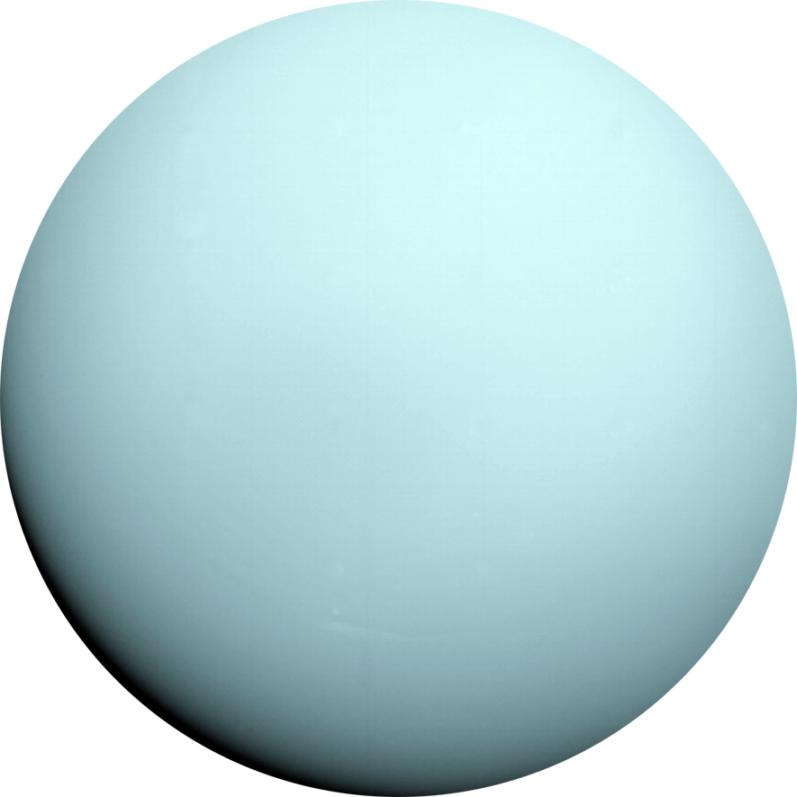

Urano é o sétimo planeta a partir do Sol e o terceiro maior do Sistema Solar.
Possui uma massa aproximadamente 14 vezes maior que a da Terra e é cerca
de quatro vezes maior em tamanho.
É conhecido como Gigante de Gelo devido à sua temperatura superficial média
de -197 ºC e composição.
Sua atmosfera contém quantidades pequenas de água, amônia e nuvens na
troposfera, onde os ventos podem atingir velocidades de até 900 km/h.
Urano possui uma magnetosfera peculiar, com um eixo magnético inclinado em
cerca de 60º em relação ao seu eixo de rotação e deslocado do centro.
Não possui uma superfície sólida como a crosta terrestre, com uma atmosfera
gasosa seguida por camadas líquidas, exceto pelo núcleo de aspecto rochoso.
